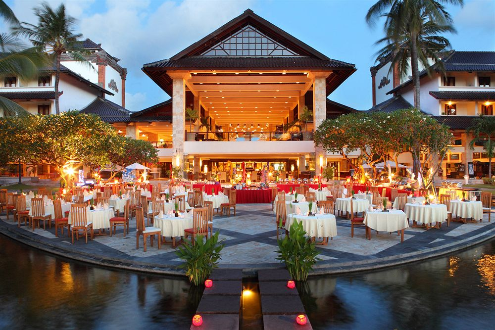

Villa Maridadi, Msitu Kwetu, Diani, is situated, on Diani Beach Road, next to Manyatta Bar and just after two Fishes/Kim4love on the opposite side of the road. Diani beach is just moments away and within walking distance from the property, the beach access is just across the road from the main gates of Msitu Kwetu. Msitu Kwetu is a very nice small secure development with 24 hour security. The property is also very secure with a staff member always present for your additional security, but if you want complete privacy, you can always ask the staff member to leave or discuss the matter with me, as we are very flexible and its whatever suits your needs. The property has been built to a high specification, typically african in design, round in shape, with galana floors and a makuti roof. All it's furniture has been handmade locally and it fits its surroundings very well.
